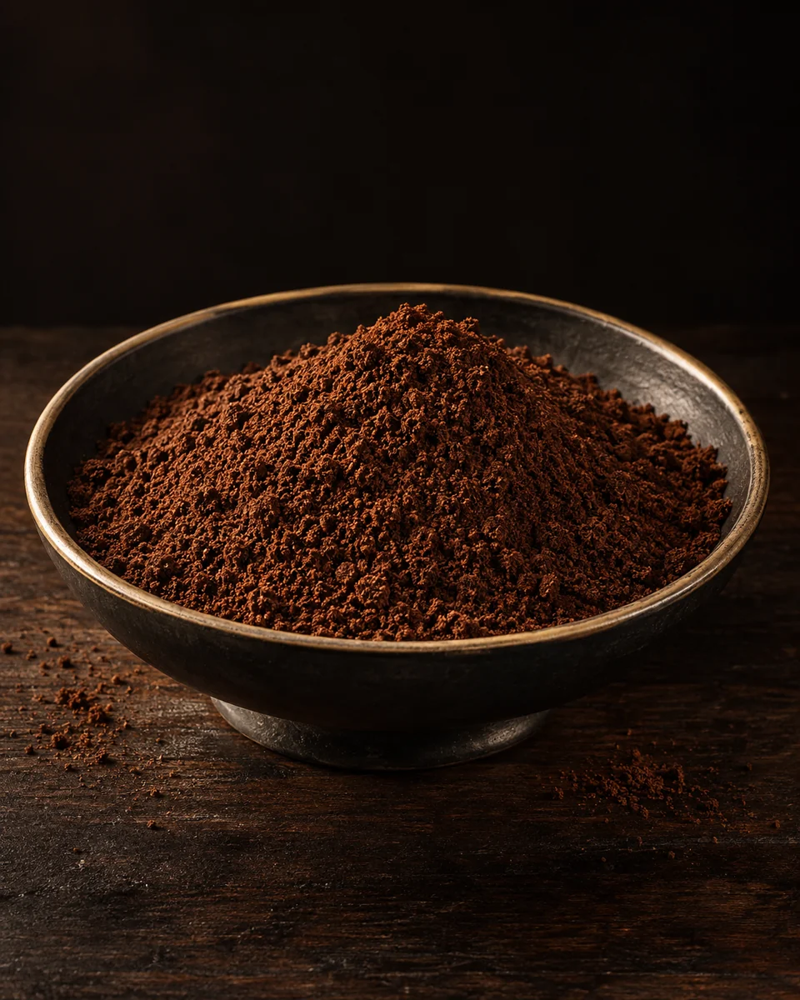
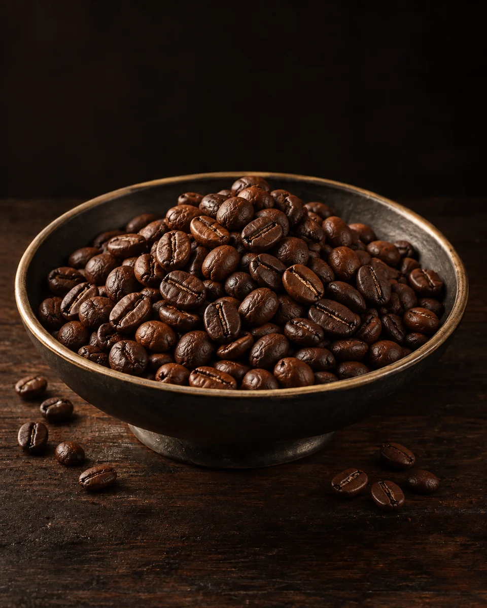
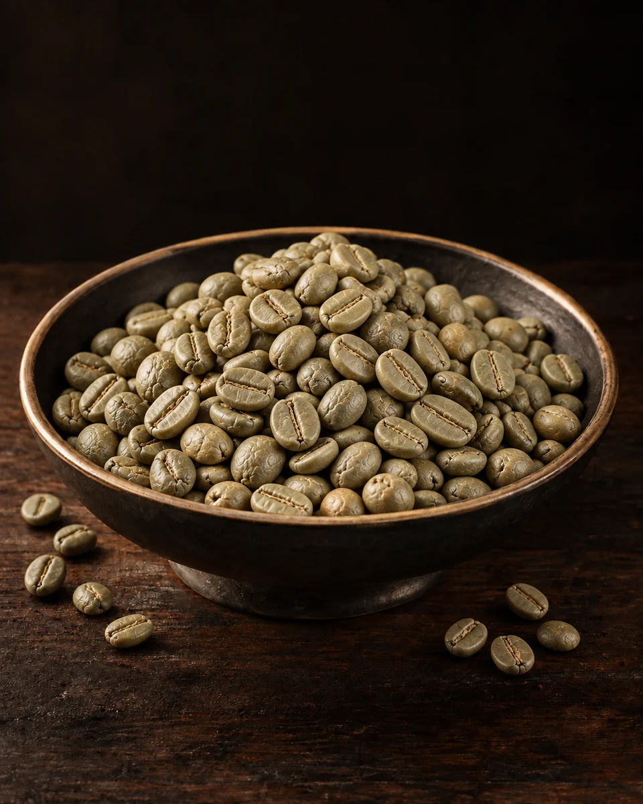
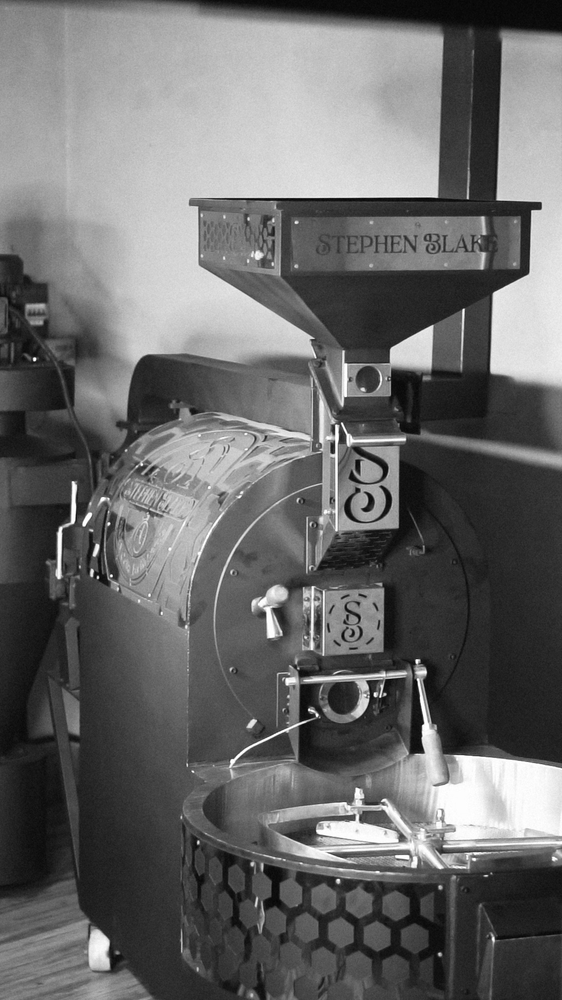

Origin
Five Indian coffee states, each with its own altitude, varieties and character.
INDIAN ORIGIN. GLOBAL REACH.
Indian coffee, selected for roasters and brands worldwide.
Scroll to discover the journey
Before coffee is a bean, it is a cherry on a tree.
Ripe cherries are picked once the fruit has developed the sugars and compounds that shape the coffee inside.
How the fruit is removed changes the coffee that comes out of it.
The whole cherry is dried around the seed, and the dried fruit is removed afterwards.
Often associated with greater fruit character, sweetness and body.
The fruit is removed and the coffee is washed clean of mucilage before drying.
Often associated with clarity and a cleaner cup profile.
The skin comes off, but part of the sticky fruit layer stays on the coffee while it dries.
Often associated with balanced sweetness, body and fruit character.
Coffee is dried slowly to a stable moisture level before storage and milling.
After drying, the coffee is hulled, sorted and graded — leaving the green beans a roaster buys.
Heat transforms aroma, structure and flavour.
Roasted coffee is ground to the particle size the brewing method needs.

Crafted for the cupCoffee developed for a rich, aromatic filter brew.
Explore filter coffee
Developed through roastWhole-bean coffees roasted to express aroma, body and distinctive flavour.
Explore roasted coffee
Before the roastSourced and graded green coffee for roasting, trading and private-label production.
Explore green coffeeOpen any coffee for its grades, origin options and full specification. Availability, minimum order and price are confirmed per enquiry — nothing here is a stock list.
Filter coffee prepared with lion’s mane, shilajit, sea moss or ashwagandha. Ask for the complete ingredient declaration on any of these.
Lot specifications, availability, minimum order and pricing are confirmed individually. Product images are illustrative; request a representative sample to evaluate your selected lot.
No account, no checkout, no guessing. Choose an origin, choose a coffee, and send us a brief. We answer with a specification and a price.
Five Indian coffee states, each with its own altitude, varieties and character.
Species, form, grade and processing — tell us what you know and leave the rest open.
We confirm availability, lot specification, packaging and an export quotation.

Every coffee begins with a place, and its character develops through variety, altitude, processing and the choices made along the way. We bring an exporter's perspective to that journey — helping buyers move from a clear brief to the right sample, specification and supply conversation.
We would rather be precise than persuasive.
 Karnataka
Karnataka
Where coffee grows helps explain its character. Explore five of India’s coffee origins, discover what makes each worth tasting, and carry your preferred region into your request.
Coorg and Chikmagalur grow both Arabica and Robusta, while the Baba Budangiri hills are closely linked to the beginnings of coffee cultivation in India.
Climate, elevation and growing conditions influence how coffee develops. Origin gives you context for comparing aroma, sweetness, acidity and body; variety, processing, roast and brewing complete the picture.
A region helps narrow your search. A named producer, harvest and process make the comparison more useful. Taste representative samples with the same recipe, then test your favourite in the drink you intend to serve.
Traceable origin lets you explain where a coffee comes from and recognise the people who grow it. Ask for evidence behind estate, geographical-indication or certification claims, and agree the details of the lot you are buying.
Regional descriptions are a guide to discovery, not guaranteed tasting notes. We confirm origin, availability and specifications for the lot proposed.
Choose a starting point and we'll carry it into your request. For experimental processing, single-estate or certified coffee, add it to the notes — availability and documents need confirming.
Bring a flavour brief, a market and a pack format. We work through blend, roast, grind, packaging and production with you. Feasibility, minimum order and timing are confirmed after review.
Answer what you know and skip what you don't. Everything you choose is carried into the brief our coffee team reads.
Explore five Indian coffee origins. If you'd rather we recommend one, leave it open.
Green beans for your own roastery, or coffee we prepare for you.
Arabica and Robusta are different starting points, not better and worse. Compare samples on your own roast and brew.
Processing describes how the fruit is removed and the coffee dried. Ask for the actual process used on the lot you're quoted.
International freight is quoted per shipment. Minimum order, bag format and documents are agreed for each order.
We use these details to reply to your request. How we handle your information
Short answers. For anything specific to a lot, the request above reaches the coffee team directly.
Store consignments in a clean, dry warehouse, protected from heat, moisture, pests and strong odours. Keep bags on pallets, clear of floors and walls, and maintain lot identification and stock rotation. Retain the agreed protective packaging and monitor warehouse conditions. Green and roasted coffee require different packaging and storage plans; share your expected holding period and destination so we can agree suitable requirements for the order.
Yes. Heat, high humidity and condensation can compromise coffee quality during warehousing and transit. For consignments held in coastal hubs such as Kochi or Mumbai, monitor storage conditions, keep packaging intact and minimise unnecessary holding time. Select protective liners or barrier packaging appropriate to the coffee and route, and inspect containers for dryness, cleanliness and odours before loading. Discuss your storage duration and shipping conditions with us when finalising the packing specification.
Yes. We can develop roasted coffee beans in your preferred flavour for commercial supply. Send us your flavour brief, target intensity, destination market and expected order volume. We will prepare a sample for approval and agree the formulation, ingredient and allergen declarations, minimum order quantity and production lead time before confirming the bulk order.
Yes, absolutely. We can work to your packaging requirements, including pack weight, bag or liner specification, private-label artwork and outer-carton configuration. Share your destination market, handling requirements and shipment volume so we can confirm material suitability, labelling, pallet configuration, minimum quantities and lead times before production.
One sample, one shipment, or an ongoing supply relationship. We answer every request with a specification, not a brochure.